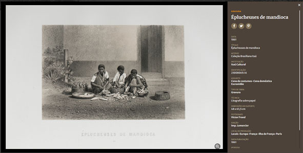
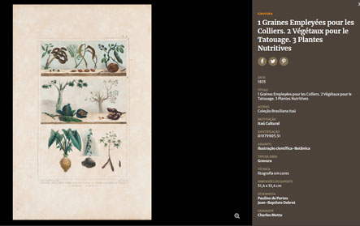

06 - Ciclo das Farinheiras - Farinha de Mandioca
(Página em construção!)
| (Obs.: Foi mantida a ortografia empregada por Romário Martins e textos conforme constam na edição de 1937 abaixo citada.) A extração do violento veneno da mandioca ao ponto de reduzi-la por um processo simples ao alimento são, generalizado hoje por toda a população do país e já com exportação para o exterior, "revela tanta ciência que os índios mesmos atribuíam tão grande invenção a São Tomé como os gregos atribuíam a Céres o ensino da cultura do trigo". (Gonçalves de Magalhães, Os indígenas do Brasil perante a História). MARTINS, Romário. História do Paraná. Empresa Gráfica Paranaense, Curitiba-PR, 1937. pág. 156. O ciclo da mandioca, uma dívida com os indígenas
Durante séculos, a mandioca foi o principal alimento consumido no Brasil. Muito antes da chegada dos colonizadores, a raiz já era cultivada pelos povos indígenas em seu sistema de manejo da floresta, em que diversas espécies de culturas podem conviver, e que respeita a biodiversidade. A capacidade de adaptação da mandioca a diferentes solos e a possibilidade de mantê-la intacta por até dois anos à espera de ser colhida encantaram os portugueses, que aprenderam com os povos originários a cultivar o alimento e também as diferentes formas de consumi-lo. A farinha feita da mandioca era chamada por diferentes grupos indígenas de farinha de guerra, porque era o mantimento que costumavam levar às costas quando iam enfrentar outros povos, e pelos portugueses, de farinha de pau, devido à mandioca ser plantada como uma estaca, ser “a raiz de um pau”. Na forma de farinha, a mandioca conserva por muito tempo suas qualidades nutricionais e por isso foi muito usada, por exemplo, nas excursões dos bandeirantes que exploraram o sertão da colônia. Para o historiador Luiz Felipe de Alencastro, é possível afirmar que houve um “ciclo da mandioca” na economia colonial brasileira, entre os anos de 1590 e1630. Padres jesuítas da Bahia, por exemplo, exportavam mandioca para os missionários de Angola em troca de pessoas escravizadas, “afora o sustento dos militares e dos padres, o transporte e a guarda – durante meses – de centenas de cativos em trânsito induziam à armazenagem de gêneros alimentícios junto às feiras e portos de trato africanos” (In: O trato dos viventes: formação do Brasil no Atlântico Sul. Companhia das Letras, São Paulo, 2000). Para o historiador Francisco Alfredo Morais Guimarães, em seu artigo A cultura da mandioca no Brasil e no mundo: um caso de roubo da história dos povos indígenas, “esse reconhecimento do papel econômico exercido pela cultura da mandioca no Brasil e no contexto do império português se contrapõe ao desprestígio dado a ela na historiografia brasileira, onde o foco, até bem pouco tempo, esteve direcionado para outras atividades produtivas, sem se levar em conta a questão da subsistência dos diversos sujeitos sociais integrados à economia-mundo no Brasil e nas demais áreas do império português”.  O consumo da mandioca e de sua farinha se disseminou pelo Brasil e permanece até hoje. Na gravura acima, do francês Victor Frond (1821-1881) vemos mulheres escravizadas descascando o alimento que penetrou em todas as casas, fazendas, engenhos, senzalas e se tornou apreciado por todos. “O alimento principal da dieta dos colonos foi durante muitos séculos a farinha de mandioca, preparada de inúmeras formas _bolos, beijus, sopas, angus_, misturada muitas vezes simplesmente à água, ou ao feijão e às carnes, quando havia. Trocada em certas regiões pela farinha de milho, como na São Paulo seiscentista e em Minas Gerais, servia de substituto do pão de trigo, mais raro e mais caro. Em algumas regiões, por exemplo, no Nordeste, foi a ‘rainha da mesa’, como a chamou Câmara Cascudo, tão fundamental era para a alimentação popular. Quando servida úmida, era posta em terrinas e cabaças; quando seca, vinha à mesa em cestas. A difusão do seu uso chegou à Metrópole e foi amplamente usada, sobretudo em épocas de escassez de trigo, quando as frotas levavam para Portugal grandes carregamentos da ‘farinha’, forma generalizada de denominá-la, pois já se sabia que era farinha de mandioca”, escreveu a historiadora Leila Mezan Algranti, no capítulo Famílias e Vida Doméstica, do primeiro volume da História da Vida Privada no Brasil (Companhia das Letras, São Paulo, 1997).  Já no século XIX, o francês Jean-Baptiste Debret, que registrou em suas gravuras os hábitos e costumes da colônia entre 1817 e 1821, também deu destaque para a mandioca, junto com o inhame e o cipó, entre as plantas nutritivas do Brasil. “Aipim (mandioca mansa). (...) É um comestível comum a toda a população brasileira. Acrescenta-se aos legumes que entram na composição do cozido e é servida na mesa para ser comida como pão. No mercado do Rio de Janeiro essa raiz é vendida diariamente”. (In: Viagem Pitoresca e Histórica ao Brasil, Imprensa Oficial do Estado de São Paulo, 2016) REFERÊNCIAS: BRASILIANA ICONOGRÁFICA. O ciclo da mandioca, uma dívida com os indígenas. Disponível em: <https://www.brasilianaiconografica.art.br/artigos/23423/o-ciclo-da-mandioca-uma-divida-com-os-indigenas#zoom-out>. Acesso em: 01/10/2023.
|